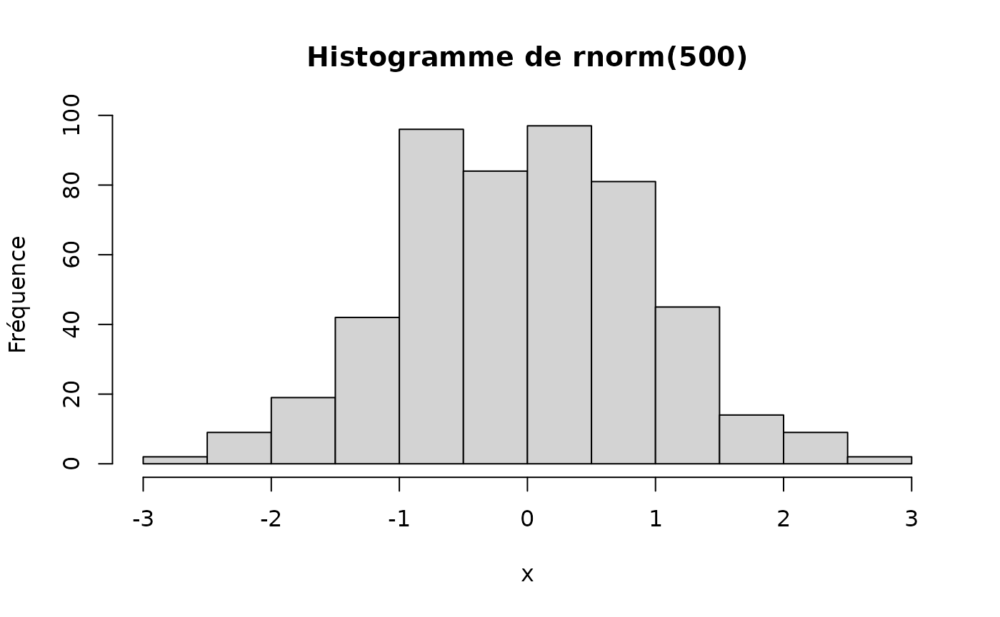
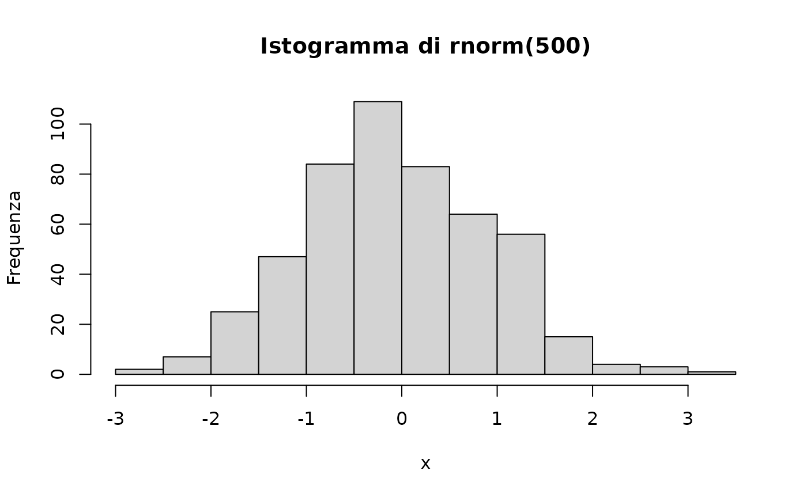

The {svBase} package offers enhanced translation functions that allow to choose the language independently from the one used in the R session. This is useful to produce tables, figures, or other outputs in a specific language, different from the R session one, or in a multilingual context.
Messages translation
Base R provides gettext(), gettextf(), and
ngettext() to translate messages. Moreover,
stop(), warning() and message()
are also automatically translated. However, you cannot indicate a
different language to the one used for the R session (for instance, if
you want to create a figure in French, while still getting error
messages in English). The {svBase}’s versions gettext_(),
gettextf_() and ngettext_() allow for
specifying lang= independently.
This works only if natural language translation is active in your R (decision made at the compile time). Check it with:
capabilities("NLS")
#> NLS
#> TRUESetting first and secondary languages
A “secondary” language can be set globally with
set_sciviews_lang(), and it is used automatically by
functions that create outputs like tables and plots. Here is how you can
use them. First, set or get R language, and alternate SciViews language
(note that you usually do not need to change R session language):
get_language() # Current R session language
#> [1] "en-US"
get_sciviews_lang() # Current alternate language for gettext_()...
#> [1] "en"You change those languages like this:
olang <- set_language("de")
olang2 <- set_sciviews_lang("fr")
# Check
get_language()
#> [1] "de"
get_sciviews_lang()
#> [1] "fr"Now, error messages and warnings are in German, while other material
for table or plots is in French. We assigned results to
olang and olang2 in order to easily come back
later to the original languages.
1:2 + 1:3#> [1] 2 4 4
#> Warning in 1:2 + 1:3: Länge des längeren Objektes
#> ist kein Vielfaches der Länge des kürzeren Objektes
nonexisting#> Error:
#> ! Objekt 'nonexisting' nich gefundenBut, using gettext_(), we can, for instance, get a
French translation:
gettext_("Test of svBase's `gettext()` and `gettextf()`:", domain = "R-svBase",
lang = "fr")#> [1] "Test des fonctions `gettext()` et `gettextf()` de svBase :"In order to use the extraction mechanism of
tools::update_pkg_po(), you should rename the {svBase}
functions with the original base R names in your package. So, place this
somewhere in your package:
gettext <- gettext_
gettextf <- gettextf_
ngettext <- ngettext_And use the renamed versions, otherwise, messages will not be added
automatically. You can use something like poEdit to write your translations easily.
You could also add the following code chunk in a
tests/testthat/test-translations.R file in your {testthat}
tests to update the files automatically each time tests are run:
test_that("The .po translation files are up to date", {
skip_on_cran()
skip_on_ci()
# Update .po and .mo files (only test in the source package, not R CMD check)
if (file.exists("../../DESCRIPTION")) {# This is the source of the package
cat("\nCompiling .po files...\n")
res <- try(tools::update_pkg_po("../.."), silent = TRUE)
expect_false(inherits(res, "try-error"),
"Updating .po files failed. Run tools::update_pkg_po() manually to debug.")
}
})Specifying language with ngettext_()
The ngettext() function accepts only a fixed number of
arguments, on the contrary to gettext() or
gettextf(). We had to remain consistent with this. So,
ngettext_() hacks the domain = argument to
provide both the domain and the language. You must combine both
like domain/lang. So, NULL/fr will use the
default domain and French language, or R-stats/de uses a
specified domain ‘R-stats’ and German language.
ngettext(1, "You asked for only one item", "You asked for several items",
domain = "R-svBase/fr") # Using svBase::ngettext_(), renamed ngettext() above
#> [1] "You asked for only one item"Using secondary language by default for plots and tables
If you intend to translate textual elements of tables and plots, you
should use set_sciviews_lang() to set a secondary language
for these outputs by default. For instance, hist()
indicates “Frequency” for the label of the Y axis and “Histogram of …”
for the title.

So, a better my_hist() function could be:
my_hist <- function(x, ..., ylab = NULL, main = NULL, lang = get_sciviews_lang()) {
hist(x, ...,
ylab = ylab %||% gettext("Frequency", lang = lang),
main = main %||% gettextf("Histogram of %s", deparse(substitute(x)), lang = lang))
}If this function is in your package, and you managed to get
translations for the two strings in gettext() and
gettextf() (thus you renamed svBase’s versions in the code,
you created translation .po files and provided the French translation),
you would get this:
my_hist(rnorm(500))
It is important here that you set default language to SciViews one
with get_sciviews_lang(), so that the user could just use
set_sciviews_lang() once and get all plots and tables
produced with compatible functions in the desired language. This
mechanism is supported by, e.g., the {chart} and {tabularise}
packages.
Of course, you still can specify a different language when calling
my_hist() (for instance in Italian, still providing proper
translations are done in the package the contains
my_hist()):
my_hist(rnorm(500), lang = "it")
Finally, to reset previous languages:
set_language(olang)
set_sciviews_lang(olang2)Of course, you probably rarely change R session language, but may wish to use a different alternate SciViews language for you documents in an international, or polyglot context.